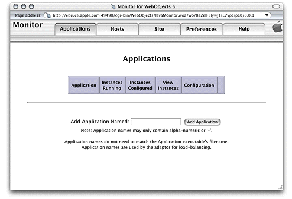

You use Monitor and wotaskd to build and troubleshoot your site. WebObjects provides scripts that allow you to control some of the behavior of Monitor and wotaskd. Specifically, you can determine whether they are started automatically when a machine starts up. That way, you'll have one less item to worry about if a machine goes down. On the other hand, if you prefer a more hands-on approach to site management, you can start and stop WebObjects services manually.
The default installation of WebObjects Deployment in Mac OS X Server adds a startup script that automatically starts a wotaskd process during system startup. In addition, if the wotaskd process dies, it's automatically restarted.
You can configure a machine to keep wotaskd and Monitor processes
active at all times. To accomplish that, you have to edit the WebObjects script
file. In Mac OS X Server, it's located in the /System/Library/StartupItems/WebObjects directory;
in Solaris, you'll find it in the /etc/init.d directory.
For example, to always have a Monitor process running on port 8888 in
your site-administration computer, you add the following line after
the line that starts wotaskd in the WebObjects script
file:
"$WOSERVICE" -appPath /System/Library/WebObjects/JavaApplications/JavaMonitor.woa/ JavaMonitor -WOPort 8888 >>/var/log/webobjects.log 2>&1 &
For more on the command-line arguments available, see "Command-Line Arguments" .
To start Monitor, enter the following commands in your command shell editor:
cd ($NEXT_ROOT)/System/Library/WebObjects/JavaApplications/JavaMonitor.woa ./JavaMonitor
You should see output similar to that in Listing 5-1.
Listing 5-1 Starting Monitor
Reading MacOSClassPath.txt ... Launching JavaMonitor.woa ... ... Creating LifebeatThread now with: JavaMonitor 49490 ebruce.apple.com/17.203.33.19 1085 30000 Opening application's URL in browser: http://ebruce.apple.com:49490/cgi-bin/WebObjects/JavaMonitor Waiting for requests...
A page like the one in Figure 5-2 should display in your Web browser. If your browser is not launched automatically, you can copy the URL from your shell and paste it into your browser's address field.
Figure 5-2 Monitor—empty Applications page
The WOServices script,
located in the $NEXT_ROOT/Library/WebObjects/Executables directory,
provides you with four options to manage WebObjects services (such
as wotaskd and Monitor) from the command line: start, stop, enable,
and disable.
WOServices
startStarts WebObjects services.
WOServices stopStops WebObjects services.
WOServices enable [-altJVMPath path]Starts
WebObjects services every time the computer is restarted. The altJVMPath argument
specifies a Java executable different from the one present during
installation. It is used to set the PATH variable
used when starting wotaskd. If you use the altJVMPath argument,
make sure to specify a full path.
WOServices disableDisables wotaskd processes from starting automatically during system startup.
During installation on Windows 2000, wotaskd is configured
to start automatically at boot time (in the Services control panel,
it's listed as Apple WebObjects Task Daemon). If it doesn't
start, check the Services control panel to ensure that wotaskd's
startup mode is set to Automatic.
Monitor is also configured as a service (listed as Apple WebObjects
Monitor in the Services control panel) and you can configure it
to start automatically during the boot process by changing its startup
mode to Automatic. Note
that although this causes Monitor to start automatically, you have
to manually start your Web browser and connect to the Monitor process
manually (or by putting a shortcut to your Web browser in your Startup
program group). The URL for Monitor can be verified by checking
the Windows 2000 Event Viewer (choose Start > Programs > Administrative
Tools > Event Viewer) and is similar to the following:
http://localhost:1027/cgi-bin/WebObjects.exe/JavaMonitor
If you don't have Monitor configured to start automatically,
you can launch it by choosing Start > Programs > WebObjects
> Monitor. In that case, it runs on port 56789.
© 2001 Apple Computer, Inc. (Last Updated August 25, 2001)